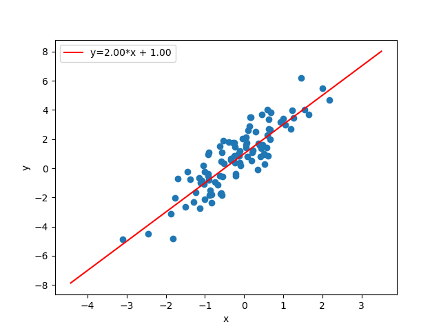
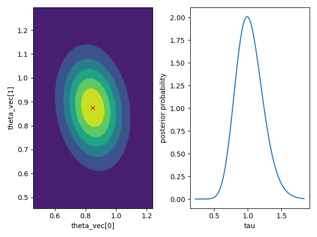

bayesml.linearregression package#

モジュール内容#
ベイズ線形回帰
確率的データ生成モデルは以下の通りです：
\(d \in \mathbb N\): 次元
\(\boldsymbol{x} = [x_1, x_2, \dots , x_d] \in \mathbb{R}^d\): 説明変数。切片項を考慮する場合、それは \(\boldsymbol{x}\) の要素の一つとして含める必要があります。
\(y\in\mathbb{R}\): 目的変数
\(\tau \in\mathbb{R}_{>0}\): パラメータ
\(\boldsymbol{\theta}\in\mathbb{R}^{d}\): パラメータ
事前分布は以下の通りです：
\(\boldsymbol{\mu_0} \in \mathbb{R}^d\): ハイパーパラメータ
\(\boldsymbol{\Lambda_0} \in \mathbb{R}^{d\times d}\): ハイパーパラメータ（正定値行列）
\(\alpha_0 \in \mathbb{R}_{>0}\): ハイパーパラメータ
\(\beta_0 \in \mathbb{R}_{>0}\): ハイパーパラメータ
事後分布は以下の通りです：
\(n \in \mathbb N\): サンプルサイズ
\(\boldsymbol{X} = [\boldsymbol{x}_1, \boldsymbol{x}_2, \dots , \boldsymbol{x}_n]^\top \in \mathbb{R}^{n \times d}\)
\(\boldsymbol{y} = [y_1, y_2, \dots , y_n]^\top \in \mathbb{R}^n\)
\(\boldsymbol{\mu}_n\in \mathbb{R}^d\): ハイパーパラメータ
\(\boldsymbol{\Lambda_n} \in \mathbb{R}^{d\times d}\): ハイパーパラメータ（正定値行列）
\(\alpha_n \in \mathbb{R}_{>0}\):ハイパーパラメータ
\(\beta_n \in \mathbb{R}_{>0}\): ハイパーパラメータ
ただし、ハイパーパラメータの更新ルールは次の通りです
予測分布は以下の通りです：
\(\boldsymbol{x}_{n+1}\in \mathbb{R}^d\): 新たなデータ点
\(y_{n+1}\in \mathbb{R}\): 新たな目的変数
\(m_\mathrm{p} \in \mathbb{R}\): パラメータ
\(\lambda_\mathrm{p}\in \mathbb{R}\): パラメータ
\(\nu_\mathrm{p}\in \mathbb{R}\): パラメータ
ここで、パラメータは事後分布のハイパーパラメータから以下のように求められます。
- class bayesml.linearregression.GenModel(c_degree, theta_vec=None, tau=1.0, h_mu_vec=None, h_lambda_mat=None, h_alpha=1.0, h_beta=1.0, seed=None)#
ベースクラス:
Generative確率的データ生成モデルと事前分布
- パラメータ:
- c_degreeint
正の整数。
- theta_vecnumpy ndarray, optional
実数のベクトルで、デフォルトでは [0.0, 0.0, ..., 0.0] となります
- taufloat, optional
正の実数、デフォルトでは1.0です
- h_mu_vecnumpy ndarray, optional
実数のベクトルで、デフォルトでは [0.0, 0.0, ..., 0.0] となります
- h_lambda_matnumpy ndarray, optional
正定値行列、デフォルトでは単位行列
- h_alphafloat, optional
正の実数、デフォルトでは1.0です
- h_betafloat, optional
正の実数、デフォルトでは1.0です
- seed{None, int}, optional
numpy.random.default_rng() を初期化するシード値です。デフォルトでは None
メソッド
事前分布からパラメータを生成します。
gen_sample([sample_size, x, constant])確率的データ生成モデルからサンプルを生成します。
GenModel の定数を取得します。
事前分布のハイパーパラメータを取得します。
確率的データ生成モデルのパラメータを取得します。
load_h_params(filename)h_paramsにハイパーパラメータをロードします。
load_params(filename)Load the parameters saved by
save_params.save_h_params(filename)python
pickleモジュールを使ってハイパーパラメータを保存します。save_params(filename)python の
pickleモジュールを使ってパラメータを保存します。save_sample(filename[, sample_size, x, constant])生成されたサンプルを NumPy
.npzフォーマットで保存します。set_h_params([h_mu_vec, h_lambda_mat, ...])事前分布のハイパーパラメータを設定します。
set_params([theta_vec, tau])確率的データ生成モデルのパラメータを設定します。
visualize_model([sample_size, constant])確率的データ生成モデルと生成されたサンプルを可視化します。
- get_constants()#
GenModel の定数を取得します。
- 返り値:
- constantsdict of {str: int}
"c_degree"：``self.c_degree``の値
- set_h_params(h_mu_vec=None, h_lambda_mat=None, h_alpha=None, h_beta=None)#
事前分布のハイパーパラメータを設定します。
- パラメータ:
- h_mu_vecnumpy ndarray, optional
実数のベクトル、デフォルトではNone
- h_lambda_matnumpy ndarray, optional
正定値行列、デフォルトではNone
- h_alphafloat, optional
正の実数、デフォルトではNone
- h_betafloat, optional
正の実数、デフォルトではNone
- get_h_params()#
事前分布のハイパーパラメータを取得します。
- 返り値:
- h_paramsdict of {str: float or numpy ndarray}
"h_mu_vec":self.h_mu_vecの値h_lambda_mat":self.h_lambda_matの値"h_alpha":self.h_alphaの値"h_beta":self.h_betaの値
- gen_params()#
事前分布からパラメータを生成します。
生成された値は``self.theta_vec``および``self.tau``に設定されます。
- set_params(theta_vec=None, tau=None)#
確率的データ生成モデルのパラメータを設定します。
- パラメータ:
- theta_vecnumpy ndarray, optional
実数のベクトル、デフォルトではNone
- taufloat, optional, optional
正の実数、デフォルトではNone
- get_params()#
確率的データ生成モデルのパラメータを取得します。
- 返り値:
- paramsdict of {str: float or numpy ndarray}
"theta_vec":self.theta_vecの値"tau":self.tauの値
- gen_sample(sample_size=None, x=None, constant=True)#
確率的データ生成モデルからサンプルを生成します。
x が与えられた場合、他のオプション（sample_size および constant）とは独立して、そのまま説明変数として使用されます。
xが与えられていない場合、独立同分布の標準正規分布から生成されます。生成されるサンプルのサイズはsample_sizeで定義されます。constantがTrueの場合、生成された説明変数の最後の要素は1.0で上書きされます。
- パラメータ:
- sample_sizeint, オプション
正の整数、デフォルトは
Noneです。- xnumpy ndarray, optional
浮動小数点数配列で、その形状は
(sammple_length,c_degree)となります。デフォルトではNoneです。- constantbool, optional
ブール値です。デフォルトでは
Trueです。
- 返り値:
- xnumpy ndarray
形状が
(sammple_length,c_degree)の浮動小数点数配列です。- ynumpy ndarray
サンプル長が
sammple_lengthの1次元の浮動小数点数配列です。
- save_sample(filename, sample_size=None, x=None, constant=True)#
生成されたサンプルを NumPy
.npzフォーマットで保存します。x が与えられた場合、他のオプション（sample_size および constant）とは独立して、そのまま説明変数として使用されます。
xが与えられていない場合、独立同分布の標準正規分布から生成されます。生成されるサンプルのサイズはsample_sizeで定義されます。constantがTrueの場合、生成された説明変数の最後の要素は1.0で上書きされます。
生成されたサンプルは、キーワード「x」「y」付きのNpzFileとして保存されます。
- パラメータ:
- filenamestr
サンプルを保存するファイル名。ない場合は
.npzが追加されます。- xnumpy ndarray, optional
浮動小数点数配列で、その形状は
(sammple_length,c_degree)となります。デフォルトではNoneです。- sample_sizeint, オプション
正の整数、デフォルトは
Noneです。- constantbool, optional
ブール値です。デフォルトでは
Trueです。
- visualize_model(sample_size=100, constant=True)#
確率的データ生成モデルと生成されたサンプルを可視化します。
- パラメータ:
- sample_sizeint, オプション
正の整数、デフォルトは50です
- constantbool, optional
例
>>> import numpy as np >>> from bayesml import linearregression >>> model = linearregression.GenModel(c_degree=2,theta_vec=np.array([2,1])) >>> model.visualize_model()
- class bayesml.linearregression.LearnModel(c_degree, h0_mu_vec=None, h0_lambda_mat=None, h0_alpha=1.0, h0_beta=1.0)#
ベースクラス:
Posterior,PredictiveMixin事後分布と予測分布
- パラメータ:
- c_degreeint
正の整数。
- h0_mu_vecnumpy ndarray, optional
実数のベクトルで、デフォルトでは [0.0, 0.0, ..., 0.0] となります
- h0_lambda_matnumpy ndarray, optional
正定値行列、デフォルトでは単位行列
- h0_alphafloat, optional
正の実数、デフォルトでは1.0です
- h0_betafloat, optional
正の実数、デフォルトでは1.0です
- 属性:
- hn_mu_vecnumpy ndarray
実数のベクトル
- hn_lambda_matnumpy ndarray
正定値行列
- hn_alphafloat
正の実数
- hn_betafloat
正の実数
- p_msnumpy ndarray
正の実数
- p_lambdasnumpy ndarray
正の実数
- p_nusnumpy ndarray
正の実数
メソッド
対数周辺尤度の計算
予測分布のパラメータを計算します。
予測分布の分散を計算
estimate_params([loss, dict_out])与えられた基準の下で、確率的データ生成モデルのパラメータを推定します。
fit(x, y)モデルをデータに当てはめます。
LearnModel の定数を取得します。
事後分布のハイパーパラメータの初期値を取得します。
事後分布のハイパーパラメータを取得します。
予測分布のパラメータを取得します。
load_h0_params(filename)h0_paramsにハイパーパラメータをロードします。
load_hn_params(filename)hn_paramsにハイパーパラメータをロードします。
make_prediction([loss])与えられた基準の下で、新しいデータ点を予測します。
overwrite_h0_params()事後分布のハイパーパラメータの初期値を学習した値で上書きします。
pred_and_update(x, y[, loss])逐次的に新しいデータを予測し、事後分布を更新
predict(x)データを予測
reset_hn_params()事後分布のハイパーパラメータを初期値に戻します。
save_h0_params(filename)python
pickleモジュールを使ってハイパーパラメータを保存します。save_hn_params(filename)python
pickleモジュールを使ってハイパーパラメータを保存します。set_h0_params([h0_mu_vec, h0_lambda_mat, ...])事後分布のハイパーパラメータの初期値を設定します。
set_hn_params([hn_mu_vec, hn_lambda_mat, ...])事後分布のハイパーパラメータの更新値を設定します。
update_posterior(x, y)訓練データを使って事後分布のハイパーパラメータを更新します。
パラメータの事後分布を可視化します。
- get_constants()#
LearnModel の定数を取得します。
- 返り値:
- constantsdict of {str: int}
"c_degree"：``self.c_degree``の値
- set_h0_params(h0_mu_vec=None, h0_lambda_mat=None, h0_alpha=None, h0_beta=None)#
事後分布のハイパーパラメータの初期値を設定します。
予測分布のパラメータも、
self.h0_mu_vec、slef.h0_lambda_mat、self.h0_alpha、および``self.h0_beta``から計算されることにご留意ください。- パラメータ:
- h0_mu_vecnumpy ndarray, optional
実数のベクトル、デフォルトではNone
- h0_lambda_matnumpy ndarray, optional
正定値行列、デフォルトではNone
- h0_alphafloat, optional
正の実数、デフォルトではNone
- h0_betafloat, optional
正の実数、デフォルトではNone
- get_h0_params()#
事後分布のハイパーパラメータの初期値を取得します。
- 返り値:
- h0_paramsdict of {str: float or numpy ndarray}
h0_mu_vec:self.h0_mu_vecの値h0_lambda_mat":self.h0_lambda_matの値"h0_alpha":self.h0_alphaの値"h0_beta":self.h0_betaの値
- set_hn_params(hn_mu_vec=None, hn_lambda_mat=None, hn_alpha=None, hn_beta=None)#
事後分布のハイパーパラメータの更新値を設定します。
予測分布のパラメータも、
self.hn_mu_vec、self.hn_lambda_mat、self.hn_alpha、および``self.hn_beta``から計算されることにご留意ください。- パラメータ:
- hn_mu_vecnumpy ndarray, optional
実数のベクトル、デフォルトではNone
- hn_lambda_matnumpy ndarray, optional
正定値行列、デフォルトではNone
- hn_alphafloat, optional
正の実数、デフォルトではNone
- hn_betafloat, optional
正の実数、デフォルトではNone
- get_hn_params()#
事後分布のハイパーパラメータを取得します。
- 返り値:
- hn_paramsdict of {str: float or numpy ndarray}
"hn_mu_vec":self.hn_mu_vecの値"hn_lambda_mat":self.hn_lambda_matの値"hn_alpha":self.hn_alphaの値"hn_beta":self.hn_betaの値
- update_posterior(x, y)#
訓練データを使って事後分布のハイパーパラメータを更新します。
- パラメータ:
- xnumpy ndarray
浮動小数点数配列です。最後の次元のサイズはc_degreeと一致する必要があります。定数項を使用したい場合は、xに含める必要があります。
- ynumpy ndarray
浮動小数点数配列。
- estimate_params(loss='squared', dict_out=False)#
与えられた基準の下で、確率的データ生成モデルのパラメータを推定します。
なお、この基準は「theta_vec」と「tau」をそれぞれ独立して推定する際に適用されます。したがって、loss="KL"の場合、スチューデントのt分布とガンマ分布の組が返されます。
- パラメータ:
- lossstr, optional
ベイズリスク関数の基礎となる損失関数、デフォルトは "squared"。この関数は "squared"、"0-1"、"abs"、"KL "をサポートしています。
- dict_outbool, optional
If
True, output will be a dict, by defaultFalse.
- 返り値:
- estimatestuple of {numpy ndarray, float, None, or rv_frozen}
theta_vec: w の推定値tau_hat: tau の推定値
与えられた損失関数の下での推定値。存在しない場合は None が返されます。損失関数が "KL" の場合、事後分布そのものが scipy.stats の rv_frozen オブジェクトとして返されます。
- visualize_posterior()#
パラメータの事後分布を可視化します。
例
>>> from bayesml import linearregression >>> gen_model = linearregression.GenModel(c_degree=2,theta_vec=np.array([1,1]),tau=1.0) >>> x,y = gen_model.gen_sample(sample_size=50) >>> learn_model = linearregression.LearnModel() >>> learn_model.update_posterior(x,y) >>> learn_model.visualize_posterior()

- get_p_params()#
予測分布のパラメータを取得します。
- 返り値:
- p_paramsdict of {str: numpy ndarray}
"p_ms":self.p_msの値"p_lambdas":self.p_lambdasの値"p_nus":self.p_nusの値
- calc_pred_dist(x)#
予測分布のパラメータを計算します。
- パラメータ:
- xnumpy ndarray
浮動小数点数配列です。最後の次元のサイズはc_degreeと一致する必要があります。定数項を使用したい場合は、xに含める必要があります。
- make_prediction(loss='squared')#
与えられた基準の下で、新しいデータ点を予測します。
- パラメータ:
- lossstr, optional
ベイズリスク関数の基礎となる損失関数、デフォルトは "squared"。この関数は "squared"、"0-1"、"abs"、"KL "をサポートしています。
- 返り値:
- Predicted_values{numpy ndarray, rv_frozen}
指定された損失関数に基づく予測値です。予測値のサイズは、calc_pred_dist(x) を呼び出した際の x のサンプルサイズと同じです。損失関数が「KL」の場合、予測分布そのものが scipy.stats の rv_frozen オブジェクトとして返されます。この rv_frozen オブジェクトはブロードキャスティングをサポートしています。
- pred_and_update(x, y, loss='squared')#
逐次的に新しいデータを予測し、事後分布を更新
- パラメータ:
- xnumpy ndarray
浮動小数点数配列です。最後の次元のサイズはc_degreeと一致する必要があります。定数項を使用したい場合は、xに含める必要があります。
- yfloat
- lossstr, optional
ベイズリスク関数の基礎となる損失関数、デフォルトは "squared"。この関数は "squared"、"0-1"、"abs"、"KL "をサポートしています。
- 返り値:
- Predicted_values{numpy ndarray, rv_frozen}
指定された損失関数に基づく予測値です。予測値のサイズは、calc_pred_dist(x) を呼び出した際の x のサンプルサイズと同じです。損失関数が「KL」の場合、予測分布そのものが scipy.stats の rv_frozen オブジェクトとして返されます。
- calc_log_marginal_likelihood()#
対数周辺尤度の計算
- 返り値:
- log_marginal_likelihoodfloat
対数周辺尤度
- calc_pred_var()#
予測分布の分散を計算
- 返り値:
- varsnumpy ndarray
予測分布の分散です。この分散のサイズは、calc_pred_dist(x) を呼び出した際の x のサンプルサイズと同じです。
- fit(x, y)#
モデルをデータに当てはめます。
この関数は以下の関数のラッパーです：
>>> self.reset_hn_params() >>> self.update_posterior(x,y) >>> return self
- パラメータ:
- xnumpy ndarray
浮動小数点数配列です。最後の次元のサイズはc_degreeと一致する必要があります。定数項を使用したい場合は、xに含める必要があります。
- ynumpy ndarray
浮動小数点数配列。
- 返り値:
- selfLearnModel
The fitted model.
- predict(x)#
データを予測
この関数は以下の関数のラッパーです：
>>> self.calc_pred_dist(x) >>> return self.make_prediction(loss="squared")
- パラメータ:
- xnumpy ndarray
浮動小数点数配列です。最後の次元のサイズはc_degreeと一致する必要があります。定数項を使用したい場合は、xに含める必要があります。
- 返り値:
- Predicted_valuesnumpy ndarray
二乗損失関数に基づく予測値です。予測値のサイズは、xのサンプルサイズと同じです。